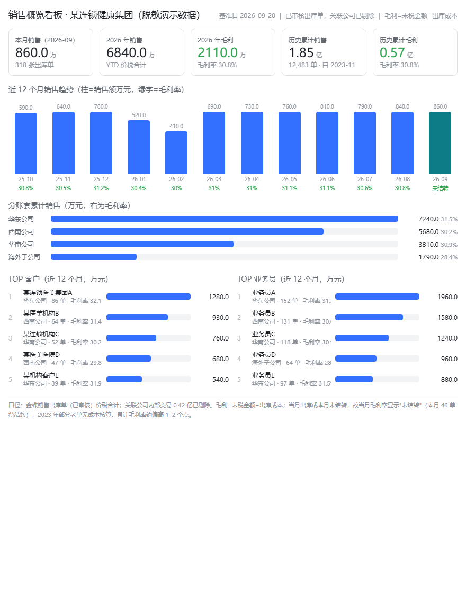
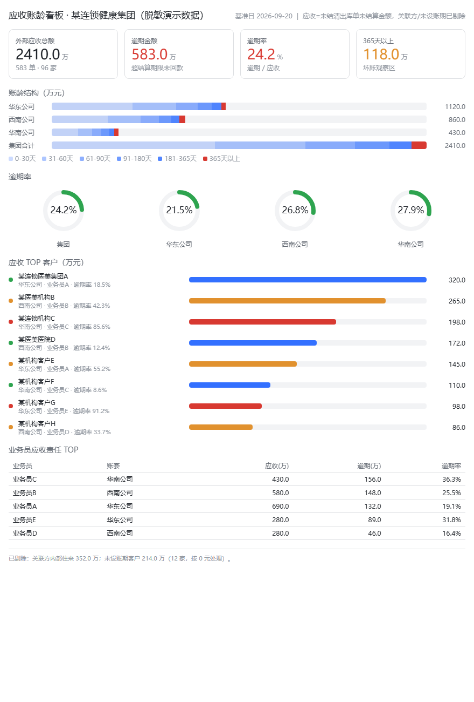

4 年企业数字化转型实操，一线业务出身。从平台选型、接口标准、独立开发到全员培训落地，一个人完成闭环——工具上线不是终点，员工每天用才是。
对接 ERP（金蝶）销售出库数据，每日自动生成：本月/年度销售与毛利 KPI、近 12 个月趋势、分账套表现、TOP 客户与业务员榜单。上线前各部门周报需人工汇总约 1 周，上线后管理层每日自动收到看板推送。

按账龄桶展示应收结构，逾期率仪表盘、TOP 欠款客户红黄绿灯预警、业务员应收责任排名。财务与商务部门每日直接使用，替代人工 Excel 对账。

注：以上为企业真实系统的脱敏演示版本——数据已替换为演示数据，界面与交互逻辑为本人独立开发。
独立开发企业微信机器人，实现销售数据、邮件、文档的每日自动发送与更新，覆盖销售、市场、财务、商务 4 个部门；打通金蝶数据与企业微信智能表格，业务数据实时更新——信息触达从"人工汇总"升级为"系统自动推送"。
使用 Claude / Codex 辅助开发，搭建小红书自动生图与文案生成智能体：输入产品要点，自动产出成图与种草文案。累计产出 60 篇内容并投入实际账号运营，单篇内容生产从 2 天缩短至 20 分钟。
独立完成低代码平台（伙伴云）选型、开发文档、接口标准与系统搭建，建立拜访、销售行为等指标统计机制，补齐销售过程数据缺口；搭建 ERP × SFE 全链路看板，统一呈现销售、达成率与行为数据，销售数据准确率连续 3 年 100%。
设计并执行公司数字化业务全员培训 20+ 场、覆盖 200+ 人，编写操作手册与使用指南，建立内部答疑机制，推动 AI 工具在各业务部门落地。一线业务出身的优势在这里：知道员工为什么抵触，也知道怎么让他们愿意用。